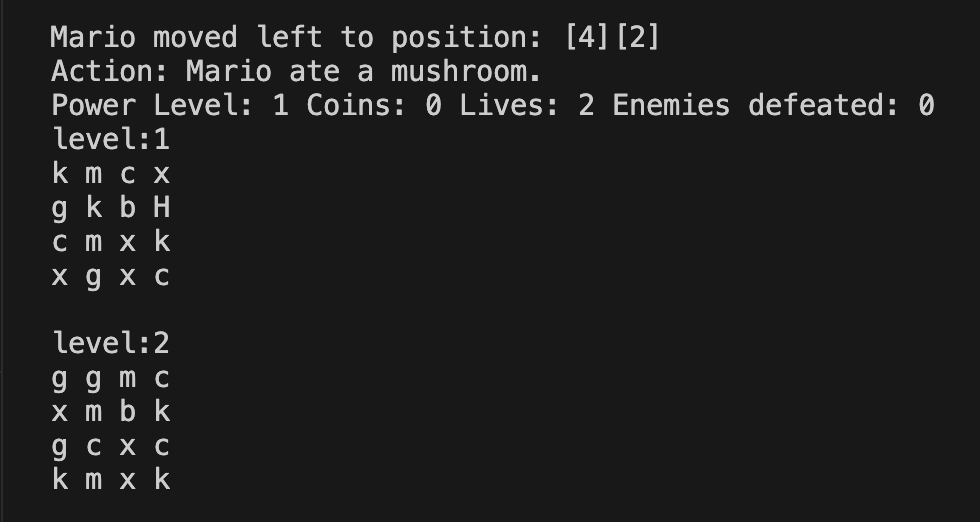

PROJECTS

RUBRIK
A Learning Management System website that utilizes SQLAlchemy for database management, offering secure user authentication with two different account types, a personalized class homepage, and a personalized profile page.
PYTHON, JAVASCRIPT, HTML5, CSS3, BOOTSTRAP, FLASK
PYTHON, JAVASCRIPT, HTML5, CSS3, BOOTSTRAP, FLASK
CHE'LU ADVENTURES
A 2D pixel art game that highlights the vibrant and culturally rich setting of my home, Guam. I designed custom game sprites through Adobe Photoshop to represent architectural landmarks and characters, ensuring visual appeal and authenticity to exhibit the unique characteristics of the island.
UNITY, C#, ADOBE PHOTOSHOP
UNITY, C#, ADOBE PHOTOSHOP
PORTFOLIO
The website you are currently viewing now, my portfolio, which showcases live demonstrations of my projects and access to the source codes. Focused on the front end and layout of the website, using tools such as Figma to ensure a creative and visually appealing portfolio.
HTML5, CSS3, JAVASCRIPT
HTML5, CSS3, JAVASCRIPT

Mario Simulator
A game simulator in C++ that features a customizable input validation of levels, lives, and probability-based coin and enemy presence for an adaptable simulation environment. Implemented an input validation system, ensuring inputs for levels, lives, and probabilities are within range, enhancing reliability and user experience.
C++
C++